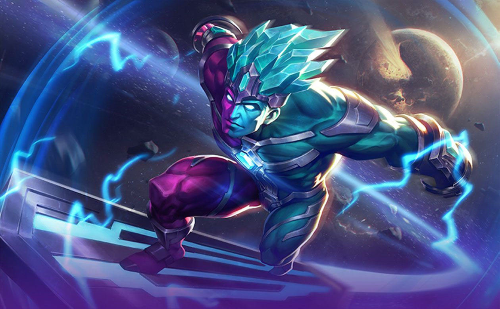

Горд – могущественный маг в Mobile Legends, обладающий огромным бурстовым уроном. Кроме того, герой обладает огромной дальностью атаки, что позволяет ему атаковать врагов с безопасного расстояния, а также пассивным навыком, способным наносить чистый урон даже сквозь щиты. В этом гайде мы рассмотрим лучшие эмблемы, боевые заклинания и сборку предметов, а также поделимся советами и хитростями, которые помогут начать доминировать при игре за Горда.
ryfghyurvurvuy urg uebg uvhen vuev uer vuheru vueb ub
Плюсы
Минусы